MedicalQA: Caregiver Q&A from Dementia-Care Videos
AIM Lab, Santa Clara University · ongoing
LLMsvLLMLLM-as-judgeBERTopicWhisperSupabase
Caregivers of people with dementia don't have time to watch hours of training videos. We're building MedicalQA to turn those videos into questions and answers they can search and ask about. It extends our lab's MentorQA framework.
I brought in the Teepa Snow dementia-care videos and grew the dataset with Whisper transcription. I added seeding, temperature and decoding controls so we compare pipelines fairly, and labeled the topics with BERTopic and a group of 9 LLMs.
For evaluation, I built a panel of LLM judges (vLLM on the university's GPU cluster plus hosted APIs) and checked it against human raters with Fleiss' kappa, Gwet's AC1 and Krippendorff's alpha. I also co-built the annotation site (JavaScript and Supabase) where people rate the generated pairs.
Graduate research with the AIM Lab, Santa Clara University · Catherine Awad, Ruiwen Guan, Hanieh Hedayati (Advisor: Dr. Oana Ignat)
LLMsPyTorchLoRADPOGRPOpass@kEvoCodeBenchDevEval
Two existing systems each do half the job. TRAVER is a tutor that talks to students but can't tell what they misunderstand. McMiner finds misconceptions from code but doesn't tutor. We connected them: every round, the student's misconception goes into the tutor's next prompt so the hint can target it. We tested mined, class-level and true (oracle) misconceptions with two tutors on EvoCodeBench and DevEval.
It didn't help. Using pass@k, paired sign tests and bootstrap confidence intervals, none of the versions beat the tutor with no misconceptions, even when we gave it the true ones. When we checked the miner's reports during tutoring, most of them were wrong.
On the training side, our LoRA reward models and a DPO tutor stayed close to chance at ranking tutor replies. I also implemented GRPO with a sandboxed unit test reward and raised Qwen2.5-Coder-1.5B's MBPP pass@1 from 0.50 to 0.57 (p < 0.001), with KL, dynamic sampling and reward poisoning ablations.
To run the long multi-round evaluations, we built a GPU harness that pauses and resumes when the server goes down, and a web app that replays baseline and McMiner dialogues side by side, with a live mode that runs new sessions against real LLM APIs.
Can a Phone Replace the GPU? On-Device 3D Pose for Movement Coaching
Santa Clara University · ongoing (interim results, Nov 2026)
3D Human Pose EstimationModel DistillationEdge ML / ONNXBenchmarkingSAM 3D BodySlurm HPCPython
Simon compares a follower's movement to a trainer's 3D recording. Right now every take runs SAM 3D Body on a cloud GPU, which costs money and means uploading the video. I'm testing if a model small enough for a phone can handle the follower's side, and how to tell if it's good enough. Joint error isn't the real test. The real test is whether the person still gets the same feedback.
I built the benchmark: 27 clips across nine movement types, with SAM 3D Body reference poses generated on the university's GPU cluster. I ran phone-sized models against it: InstantHMR (a recent phone mesh model by other authors) and Google's BlazePose GHUM in three sizes. Every output goes through Simon's own fault analysis, so I compare the actual coaching (which faults get flagged, the score, the grade) and not just joint positions. I've also started building a training set from licence-cleared data (Harmony4D and permissively licensed COCO images) labeled with SAM 3D Body.
So far, InstantHMR passed Simon's joint accuracy bar on 24 of 27 clips (median 5.5 cm from SAM 3D Body, 22 ms a frame on a laptop CPU). But it gave the exact same faults on only 1 of 18 follower takes (fault F1 around 0.50), and it struggled most with floor and seated poses. BlazePose passed the joint bar on 4 of 27 clips at most. The takeaway: passing the usual joint accuracy bar doesn't mean the feedback stays the same, so feedback agreement should be the measure. Next I'll fine-tune the phone model and judge it on that.
Medical Anomaly Detection with Vision-Language Models
Course project · team of four
CLIPMVFAPyTorchFew-shot learning
Labeled medical images are hard to get, so we wanted to see how well a general vision-language model can find anomalies in chest X-rays with only a few labeled examples. We built on MVFA (Multi-level Visual Feature Adaptation) on top of CLIP (ViT-L/14). Images and medical text prompts go into the same space, and the anomaly score comes from comparing an image to descriptions of normal and abnormal findings. We used the RSNA pneumonia dataset (about 29k chest X-rays, filtered to 17k) and measured AUROC from zero-shot up to 16 shots.
We tried sixteen setups, comparing scoring heads (including a small MLP that scores straight from image features), adapter regularization, medical prompt ensembles, and combining cosine similarity, Mahalanobis distance and energy scores. I worked on the scoring side: the scoring methods, the score fusion and the regularization.
Everything ran on V100 GPUs on the university's WAVE cluster, so there's no public repo. The full results are in the report below.
Full Research Report (PDF)
TTS & Voice Imitation
B.S. graduation thesis (team of six), Alexandria University · 2019
Tacotron 2Speech SynthesisDeep Learning
A text-to-speech system that speaks in different people's voices, including voices it never saw in training. It's three separately trained models around a Tacotron 2 synthesizer: you give it text and a sample of a voice, and it says the text in that voice. We also built a simple app to try it.
On top of the English models, we added an Egyptian Arabic dataset and fine-tuned the system to speak realistic Arabic, which has very little dialect training data. The slides and the thesis are below.
Presentation Slides & Voice Samples
Graduation Thesis (PDF)
Projects
Hover over a project or scroll the row to see more.
NextRx: Medication Reminder App
Solo project · On Google Play · iOS in TestFlight
React Native / ExpoTypeScriptSupabase
A medication reminder app I built on my own. It's on Google Play, and iOS is in TestFlight. Reminders use the phone's own alarm system, so they go off on time even when the app is closed, and you can mark a dose as taken right from the notification.
It keeps track of how many tablets are left in the box, keeps your dose history, and works in English, Spanish and Arabic (fully right to left). Your data stays on your phone. You can scan a pharmacy label with the camera or a photo to fill in the medication, sign in with a magic link if you want, and the notifications are privacy-safe.
I built this on my own, from scratch, for the volunteer organization I work with in Egypt. It keeps the records of the visually impaired and elderly people we serve, plus the volunteers, groups and announcements, in Arabic and English.
It has role-based access with admin approval, audit logs, push notifications that follow each person's timezone (FCM and Cloud Functions), and compressed, cached images on Firebase. The Arabic version is fully right to left and was built in from the start, not added later.
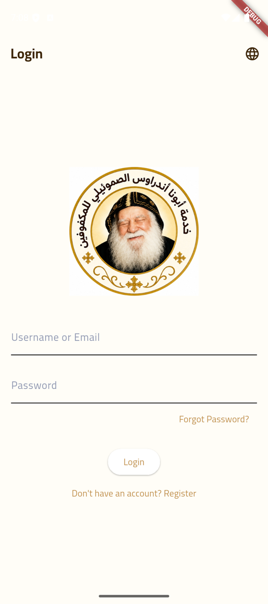
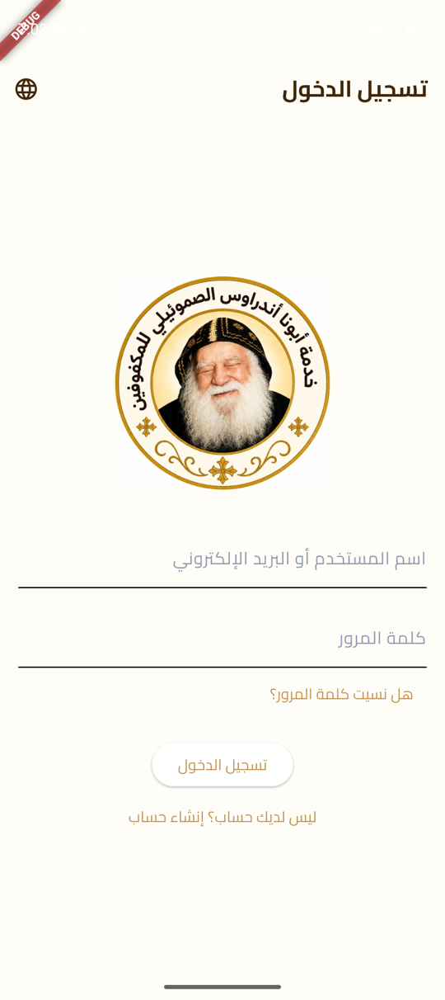
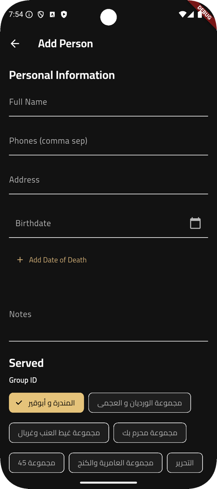
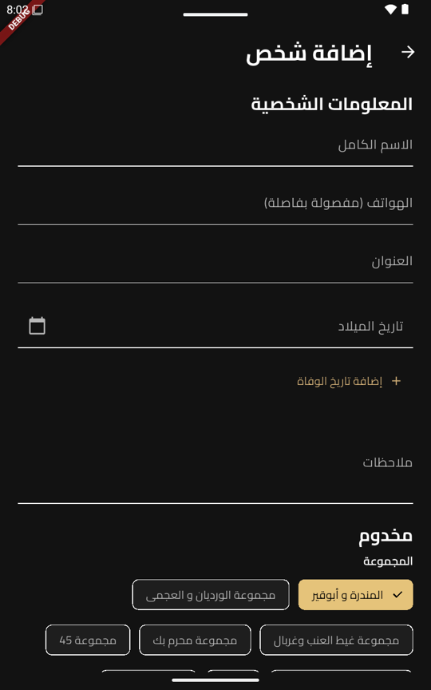
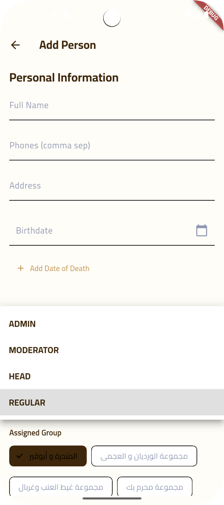
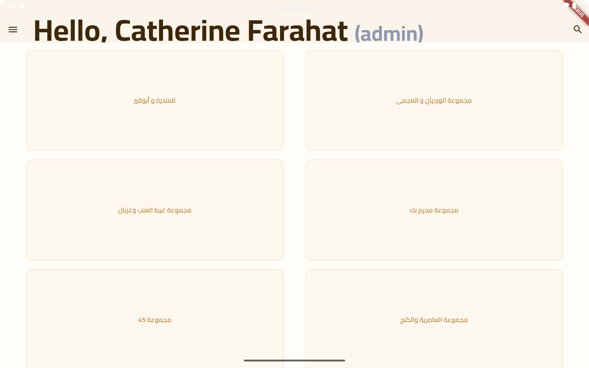
The admin dashboard on a tablet. The same code adapts to bigger screens, with service groups organizing the people we serve.
IncidentAid
EPIC Lab, Santa Clara University · Emergency response app
FlutterFirebaseRiverpodGoogle MapsBLE
An app for firefighters to report incidents and coordinate the response, built at Santa Clara University's EPIC Lab. I'm the primary lead developer on it.
It used to be separate native apps. I rebuilt it as one cross-platform Flutter app and redesigned it: a new UI/UX designed in Figma, Riverpod for state, a repository layer for data, a move from Firebase Realtime Database to Firestore, and dashboards and navigation based on each person's role. I also added Google Maps/Places, BLE beacon scanning and real-time alerts, with separate prod and dev Firebase environments.
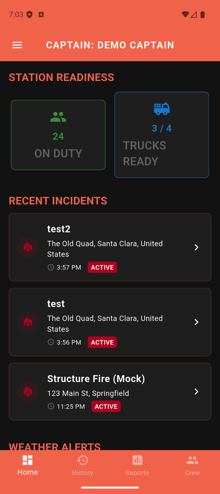
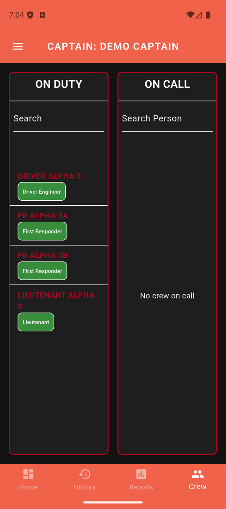
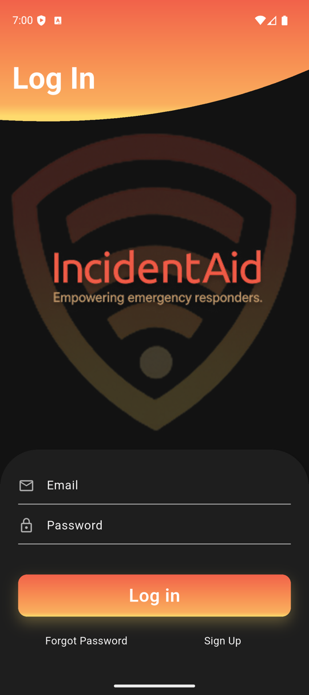
Two-minute demo: PAR check-ins and Mayday alerts showing up live on an iPhone simulator, an Android phone and a command tablet, all on the same backend.
Hydration Automation
EPIC Lab, Santa Clara University · Farm IoT platform
An IoT platform for monitoring agricultural hydration systems in real time, built at Santa Clara University's EPIC Lab.
App: I built the Flutter app: live sensor dashboards with a farm health score, magic link sign-in, and translations with dark mode. Farmers set up a farm by putting it on a map and drawing the field's edge, either by tapping or by walking it with the phone's GPS. They add devices by scanning the printed labels (QR, with NFC to identify a unit), and can rename stations and sensors, move them between farms, release them, or save their install location from the phone's GPS. Sign-up is invite only, with a "Get a device" page instead.
Firmware & backend: I built the SAMD21/LoRa firmware in Arduino C++: uploads that wait for an acknowledgement and get batched, an offline queue, NTP-synced clocks, device whitelists refreshed over the air, battery telemetry, and rejecting data from units that aren't on the list. I co-developed the Node.js/Express backend: claiming devices with hashed label tokens that rotate, ownership checks, farm boundaries, batched IoT uploads, a simulated test fleet, and PostHog feature flags.
I also built the public website (two languages, light and dark themes) and set up the CI pipeline, commit hooks, design system checks and integration docs the team works from. Everything goes through reviewed pull requests.
Shared shopping lists and expenses for roommates and families, updated in real time.
Two backends: I started with Flutter and Firebase (Firestore real-time listeners, Bloc/Cubit for state, push notifications), then moved the data to a Java Spring Boot API with Spring Security (OAuth2 / JWT), Spring Data JPA, PostgreSQL with Flyway migrations, Docker and CI.
Frona Tech · Released on the App Store & Google Play
FlutterScalagRPCAWSDockerPostgreSQL
I co-founded Frona Tech and was the lead software engineer. We built a diet and fitness app for Android and iOS and took it from the first architecture to release on the App Store and Google Play.
Features: a diet and macro engine (Keto and Paleo, with barcode scanning), a workout trainer mode (supersets, rest timers and lift progress graphs), and sharing plans from influencers.
Stack:Flutter apps on top of Scala microservices talking over gRPC, running in Docker on AWS.
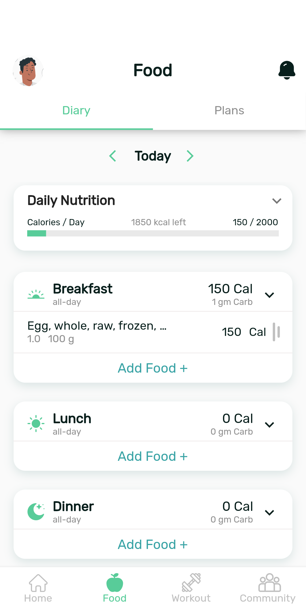
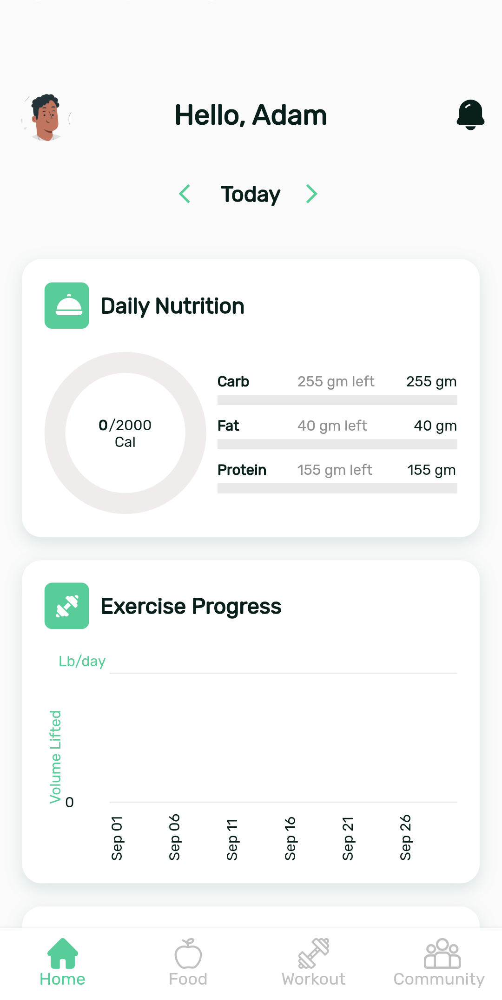
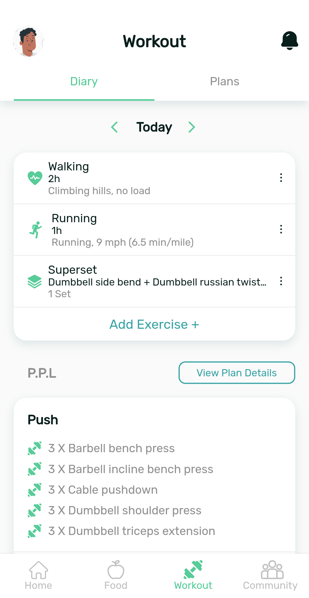
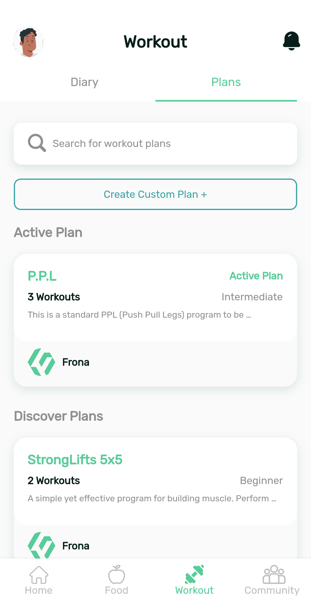
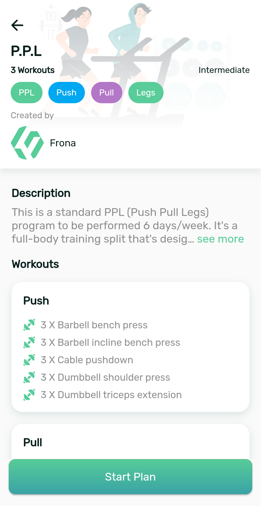
Hackathons
Hover over a project or scroll the row to see more.
GPU Cluster Analysis: Shorter Queues and Root Causes
MantisGrid AI Hackathon 2026 · Best Solution, Track 2
We were given a $1.49M GPU cluster bill. Most teams focused on cutting the cost. We asked something else: why are researchers stuck in the queue when the cluster is mostly idle, and what's really causing the failures behind the bill?
The queue was a quota problem, not a hardware problem. I built a scheduler simulator and replayed all 74,838 jobs that could start. In 90% of waits longer than an hour, the researcher had already hit their own limit on running jobs, while a median of 287 out of 450 GPUs were free. Letting people go past their limit while the cluster is under 70% used, plus ending allocations that sit idle for an hour, cut the modeled waiting from 1,326 to 59 person-hours. That's 96% less, with no new hardware. Reordering the queue didn't help, because the scheduler was already close to first come, first served, with backfill working.
A safer option using prediction. Letting people go past their limit only reacts after the fact, so we also tried a credits pool: when a researcher is away, they lend their unused quota for a limited time. Based on the limits people requested, it did nothing, because they asked for about 2,000 times more than they used. Based on each person's predicted runtime (their past p90), it cut waiting by 11%, or 21% with the idle timeout, and lenders were only blocked for 4.3 researcher-hours over 18 weeks. Predicting each person's quota from their recent demand didn't work. Demand was too bursty and waiting went up.
Root causes, not symptoms. The API said to take down the five machines with the most findings. When we traced those findings through its causal graph, the problem was one broken Slurm array script, not five broken machines. A 121-machine "incident" came down to one storage volume. The one machine that was actually broken ranked 21st by number of findings. We found it by checking which crashes followed the machine and not the user (SIGBUS, three unrelated users), and it could have been caught six days earlier.
Then the cost: about $359K could be saved ($202K to $491K), mostly from GPUs that were allocated but never used. Taking those back first, before cutting capacity, keeps the queues from getting worse. I built the analysis pipeline, the scheduler simulator and the CFO dashboard, where a slider steps through precomputed replays of the quota options.
Accepting the Best Solution, Track 2 award with my teammate, as team PrayingMantis.
Simon: AI Movement Coaching App
Meta Global AI Developer Hackathon 2026 · team of three
SAM 3.1SAM 3D BodyModalPython
A trainer records a movement once, a follower records their try, and Simon compares the two in 3D and tells them what was different in plain words ("left foot too far out"). It uses 11 Meta models and it's live as a web app.
I built the multi-person 3D tracking and the fault analysis and scoring engine, moved the GPU work to Modal serverless (about 40 seconds per take instead of 2 to 3 minutes), and coordinated the releases and the submission for the judges.
Our official hackathon submission demo.
A 90-second walkthrough on a phone-sized test build: a trainer records a knee raise, a follower records the same move, and Simon shows the 3D comparison, timed notes and the score.
Tourniquet: Guardrail for AI Agents
CrowdStrike × SCU AI Hackathon 2026 · team of three
AI agent securityPrompt injectionNode.jsDocker
Tourniquet sits between an AI agent and its model and tools, and stops prompt injection from leaking data or misusing tools. I built OpsBot, a test support agent that we attacked with direct and indirect prompt injection.
OpsBot has layers of defense: the team's proxy and outbound traffic guard, plus OpsBot's own permissions per request, which I built. I also built the live results deck and dashboard, and presented our pitch.
Experience
AI Research Assistant · AIM Lab, Santa Clara University
May 2026 – Present
Working on how to generate useful LLM outputs and how to evaluate them properly, for dementia caregiver Q&A and code tutoring.
Building MedicalQA, an LLM system that turns dementia-care videos into caregiver Q&A, by extending the lab's MentorQA framework, and checking how well LLM judges and human ratings evaluate it.
Co-developed McMiner-in-the-Loop, which gives an LLM tutor the student's misconception before its next hint. We tested it on two code benchmarks with two tutors and found it doesn't reliably help.
Software Engineering Research Assistant · EPIC Lab, Santa Clara University
2025 – Present
Building real-time IoT and emergency response apps for farms and firefighters.
Developing Hydration Automation across the Flutter app, the Node.js/Express backend and the Arduino/C++ firmware. I set up the CI pipeline, commit hooks, design system checks and integration docs the team works from.
Rebuilding IncidentAid from its old native apps into one cross-platform Flutter app, with a new UI/UX designed in Figma, Riverpod for state and role-based dashboards.
Co-Founder & Lead Engineer · Frona Tech, Egypt
July 2021 – Dec 2023
Co-founded a mobile startup and led the product from idea to the app stores.
Led a team of four engineers building Frona, a diet and fitness app for Android and iOS to plan meals and workouts and track calories, macros and workouts.
Took it from idea to release on the App Store and Google Play (Scala, gRPC, Flutter, AWS, Docker).
Teaching Assistant · Alexandria University
Sept 2019 – Jan 2020
Taught undergraduate computer science classes and ran weekly labs.
Ran labs for Programming 1, Design of Algorithms and Operating Systems.
Education
M.S. Computer Science & Engineering · Santa Clara University
Jan 2025 – Dec 2026 (exp.)
GPA: 3.87 · Focus on AI and LLM systems, mobile software engineering and IoT. Research with AIM Lab and EPIC Lab.
B.S. Computer & Communications Engineering · Alexandria University
2019
Graduation thesis: text-to-speech and voice imitation with deep learning and Tacotron 2.
Spoken languages Arabic (native) · English (fluent)
Beyond code
15+ Years Community Leadership
I've volunteered for 15+ years with elderly people, orphans and people with disabilities in Egypt. Since 2020 I've led volunteer training and coordination at the same organization, and that's what got me to build the Volunteer Service Management App above.
“The app I'm proudest of is the one my own community uses every day.”